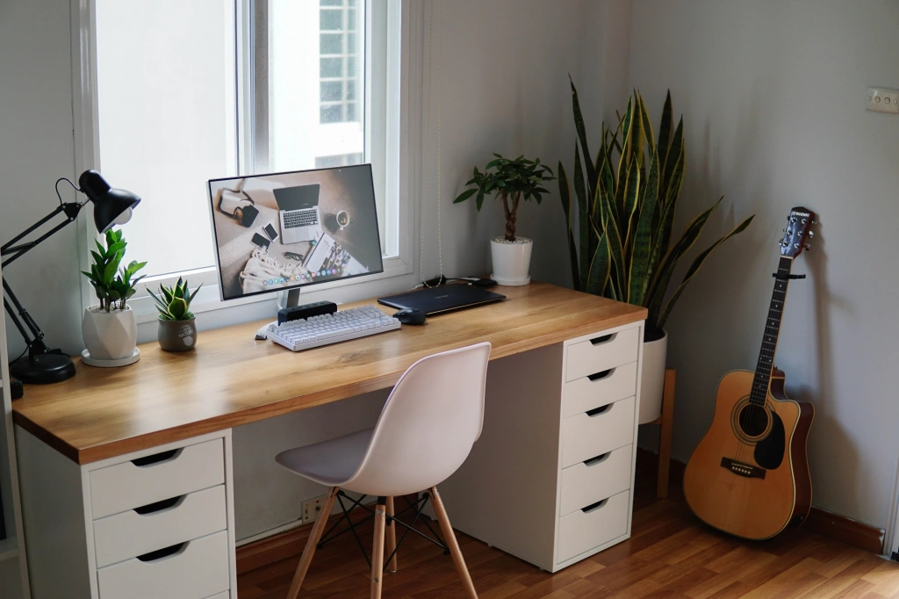
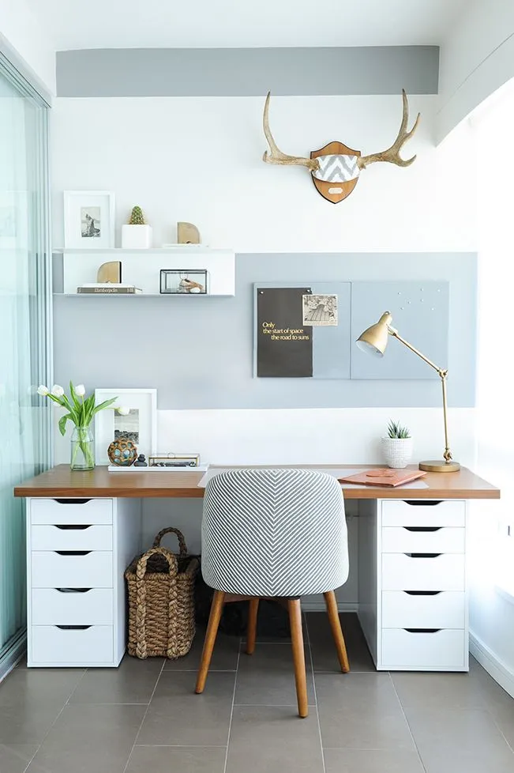
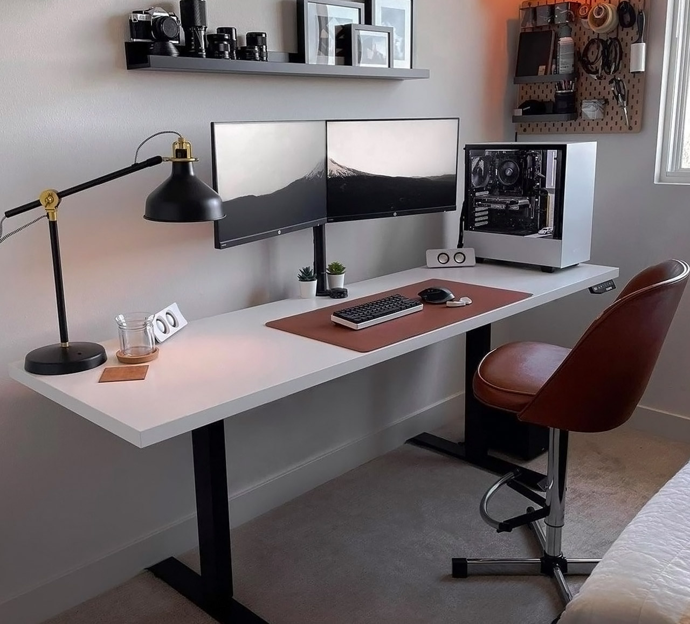
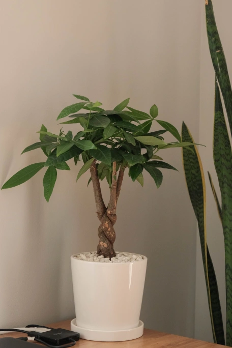
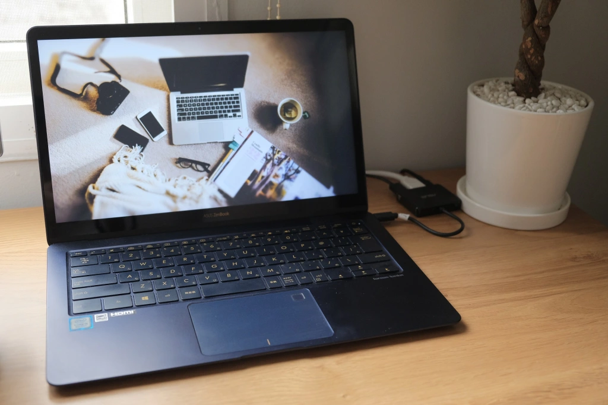
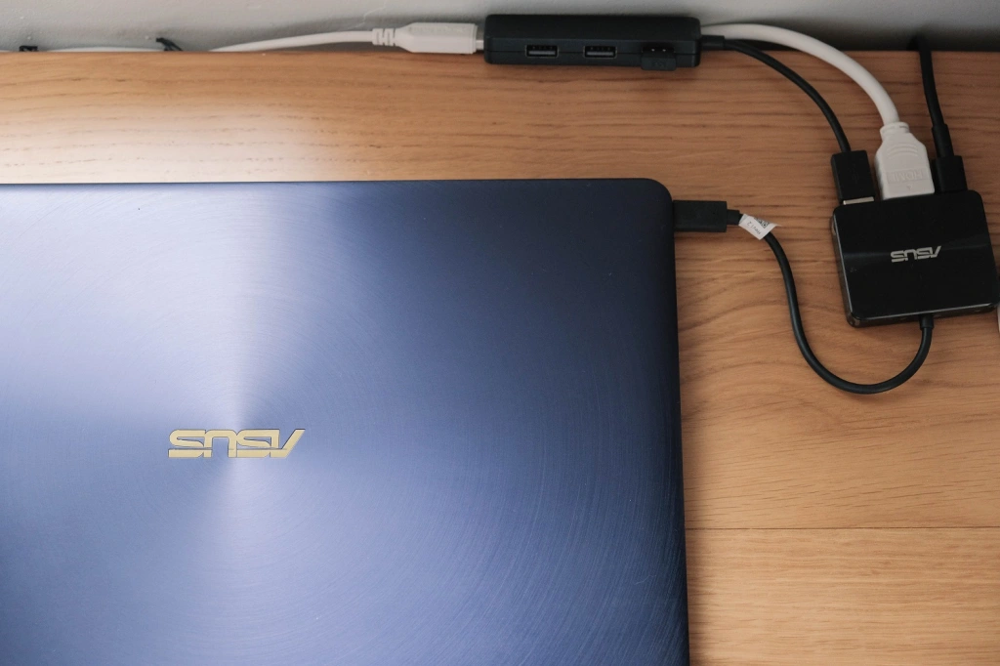
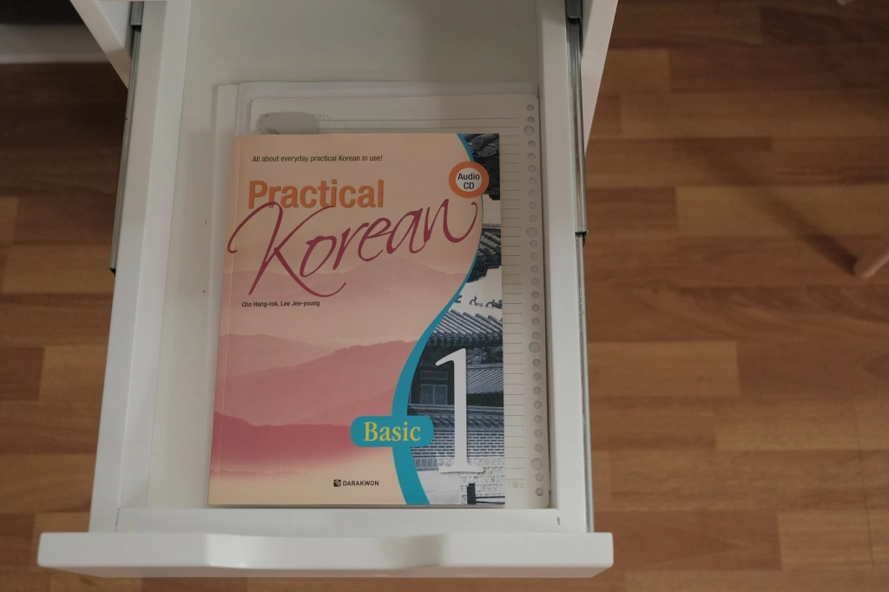
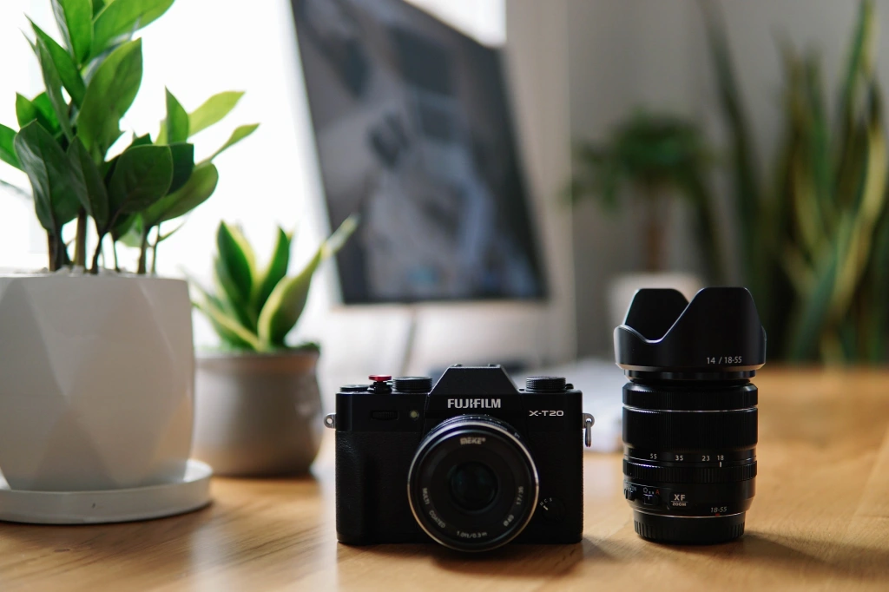

BÀN LÀM VIỆC TỐI GIẢN CỦA MÌNH

Tiếp tục phần 2 trong chuyên mục “Tủ sách và bàn của mình có gì”, ở bài viết này mình sẽ giới thiệu với mọi người chiếc bàn làm việc – học tập theo phong cách tối giản của mình, cũng như một số đồ vật mình đặt ở trên bàn. Đồng thời, mình sẽ chia sẻ một số bí quyết giữ bàn làm việc luôn gọn gàng sạch sẽ, qua đó giúp tối ưu năng suất học tập và làm việc.
Nếu ai tò mò về chiếc tủ sách cao 2m bên cạnh chiếc bàn 1m8 của mình thì bạn có thể đọc bài viết này nhé: Tủ sách của mình có gì?

Bàn làm việc phong cách Châu Âu
Mình sẽ nói cụ thể về chiếc bàn trước. Đây là bàn làm việc theo mẫu IKEA (hãng nội thất nổi tiếng của Thụy Điển). Bạn có thể search cụm từ “ IKEA Kitchen Countertop Desk ” để xem được nhiều bức ảnh về loại bàn này. Ở Việt Nam không bán sẵn mẫu bàn như thế này nên bạn phải tham khảo bản thiết kế tìm thấy ở trên mạng, sau đó tự tùy chỉnh và nhờ một xưởng đồ gỗ nào đó đóng bàn cho. Mình nhờ một xưởng đồ gỗ quen làm lâu năm cho nhà mình đóng cả bộ bàn và tủ nên giá cả cũng hợp lý. Họ chỉ nhận đóng đồ gỗ cho người quen, chứ bình thường nhờ đóng ít như thế này họ ngại nhận, hoặc là sẽ đắt hơn một chút.

Về thiết kế, chiếc bàn này bao gồm 2 ngăn kéo màu trắng ở 2 bên (gồm 5 ngăn mỗi bên), có chất liệu là gỗ công nghiệp màu trắng, và mặt bàn được đặt cố định lên phía trên. Mặt bàn có kích thước là 180x60cm, với độ dày 3cm, và được làm từ gỗ sồi nên màu rất đẹp (tất nhiên là cũng không rẻ lắm).
Bây giờ đi dọc phố Đê La Thành bạn sẽ dễ dàng bắt gặp nhiều cửa hàng bán loại tủ/ngăn kéo gần y chang như trên. Bạn chỉ cần nhờ họ làm thêm một cái mặt bàn theo size tùy thích và đặt tên ngăn kéo là được chiếc bàn giống như của mình rồi. Về mặt bàn thì bạn hoàn toàn có thể chọn gỗ công nghiệp để tiết kiệm chi phí, đặc biệt là chọn mặt bàn là gỗ công nghiệp trắng thì sẽ cùng màu với ngăn kéo luôn, nhìn rất đẹp.
Một số bức ảnh tham khảo:

Trên bàn mình có gì?
Là một minimalist, mình luôn giữ mặt bàn ở trạng thái gọn gàng, sạch sẽ nhất. Trên bàn mình chỉ có chiếc đèn bàn pixar, vài chậu cây xanh và setup máy tính bao gồm màn hình, laptop và một số phụ kiện khác.
.webp)
Đèn bàn Pixar
Cách đây 2 tháng khi mới đóng xong chiếc bàn, mình dùng tạm chiếc đèn LED Rạng Đông cũ trong khi tìm mua một đèn bàn xịn và đẹp để thay thế. Tuy nhiên, cuối cùng thì mình chọn mua một chiếc đèn Pixar giá chỉ khoảng 150k ở ngay ngoài phố Đê La Thành. Cá nhân mình thấy đèn Pixar khá đẹp, phù hợp với mọi thể loại setup. Nhờ mua đèn này mà mình cũng tiết kiệm được kha khá để chi tiêu cho món đồ khác, vì dự định ban đầu của mình là mua một chiếc đèn giá cỡ 700k.
Tip #1: Nên đặt đèn ở bên trái bàn đối với những ai viết bằng tay phải. Nếu bạn viết bằng tay phải mà lại đặt đèn ở bên phải bàn thì khi ánh đèn rọi vào bạn sẽ khó nhìn thấy chữ viết trên mặt giấy vì bị bàn tay che mất ánh sáng.
Cây xanh
Hiện tại trên bàn mình có 3 chậu cây xanh, gồm cây kim tiền và lưỡi mèo ở cạnh đèn bàn, và cây kim ngân xoắn ở góc bên phải bàn. Cả 3 chậu cây này mình đều mua ở cửa hàng Cây cảnh Hà Nội số 628 Hoàng Hoa Thám. Chỗ này khá uy tín và bán rất nhiều cây cảnh để bàn cũng như cây to đặt trong nhà.

Ngoài ra mình còn đặt một chậu cây lưỡi hổ siêu to ở góc tường cạnh bàn, tạo ra một không gian làm việc xanh mà mình gọi là “nature-inspired minimal work space” (không gian làm việc xanh và tối giản?).

Tip #2: Có thêm cây xanh đặt trên bàn, dù chỉ một chậu cây nho nhỏ thôi cũng sẽ giúp bạn cảm thấy thích thú hơn với việc ngồi làm việc ở bàn. Rất nhiều bài viết trên mạng đã chỉ ra những lợi ích của việc đặt cây xanh ở văn phòng hay trên bàn làm việc, ví dụ như giúp lọc không khí, giảm stress căng thẳng, và giúp tăng cường năng suất làm việc (productivity). Cá nhân mình thấy có cây xanh trên bàn giúp bản thân có ý thức hơn trong việc dọn dẹp mặt bàn, có lẽ là vì muốn cây xanh được sống trong một môi trường sạch sẽ, chứ không phải là ở giữa một đống đồ lộn xộn.
Laptop, màn hình máy tính và một số phụ kiện khác
Setup máy tính trên bàn mình là sự kết nối giữa laptop và màn hình 24 inch, kèm theo đó là một chiếc bàn phím cơ, chuột không dây và loa bluetooth màu đen đặt ở sát chân màn hình.

Trước tiên là về chiếc màn hình. Đây là màn hình LG 24MP88HV 24 inch, có 2 nguồn cắm HDMI cũng như có sẵn loa bên trong. Mình rất thích màn hình này ở chỗ là viền siêu mỏng, và không có biểu tượng logo LG, thay vào đó logo được in ở chân màn hình. Mình sử dụng màn hình LG này làm màn chính, trong khi đó sử dụng màn hình laptop như là một màn hình phụ, đặt ở chế độ Extended và có thể dùng 2 màn hình một cách riêng biệt.
Laptop của mình là Asus Zenbook 3 Deluxe 14 inch mua ở Nhật. Điểm đặc biệt của chiếc máy này chính là ở sự “siêu mỏng nhẹ”, khi chỉ nặng có 1,1kg và dày chưa đến 1,5cm (khi gập màn hình lại).

Mình sử dụng cáp chuyển đổi (từ USB-C sang các ổ khác) mà Asus tặng kèm khi mua máy. Nhờ bộ chuyển này mà mình có thể dễ dàng kết nối màn hình máy tính, bàn phím và chuột vào cùng một chỗ trước khi được kết nối sang laptop qua ổ USB-C. Như vậy, khi muốn mang theo laptop đi cafe hay làm việc ở ngoài thì mình chỉ việc rút dây cáp ra mà không hề tốn công trong việc tháo lắp các dây khác. Đặc biệt, laptop này có thời lượng pin dài đến 8 tiếng nên mình gần như không bao giờ phải mang theo sạc máy.

Mình chia sẻ thông tin phụ kiện máy tính cho những ai cần:

Tip #3: Nếu những ai muốn làm một setup máy tính với laptop là nguồn chính, thì sau khi đã mua thêm màn hình hay các phụ kiện bên ngoài, bạn có thể tìm mua thêm một cáp chuyển đổi để có thể gộp gọn các dây phụ kiện lại và chỉ việc cắm vào laptop, với điều kiện là laptop phải có cổng USB-C.
Tip #4: Bạn có thể tìm mua hộp thu gọn dây diện hay băng dán thu gọn dây điện để buộc gọn các loại dây phụ kiện hay dây điện, qua đó giúp bàn làm việc trở nên gọn gàng hơn và không bị mất thẩm mỹ ( cable management).
Trong ngăn kéo có gì?
Vừa rồi là những món đồ cố định mà mình đặt ở trên bàn. Chắc là sẽ có vài bạn hơi thắc mắc rằng một số đồ dùng cá nhân như hộp bút, sổ,… thì mình để ở đâu. Vậy thì cùng khám phá ngăn bàn của mình nhé.
Dồ dùng cũng nên có “chỗ ở riêng”
Ngăn kéo trên cùng bên trái là nơi đặt những đồ dùng mà mình thường xuyên sử dụng nhất, bao gồm cuốn sổ nhật ký (màu nâu), máy đọc sách kindle paperwhite, sổ tay cá nhân (màu xanh nước biển), hộp bút, ví tiền, chìa khóa, tai nghe và… thỏi dưỡng môi.

Sáng sớm sau khi dậy mình sẽ ngồi vào bàn, lấy sổ nhật ký và sổ tay ra để viết và lập kế hoạch, sau đó sẽ đặt lại vào ngăn bàn. Những lúc nào cần đem theo ra ngoài đường thì mình lại lấy ra, bỏ vào balo, sau đó khi về nhà thì lại đặt vào đúng vị trí cũ. Điều này cũng tương tự đối với ví tiền hay chìa khóa.
Tip #5: Bạn nên tìm một chỗ, một vị trí cố định để đặt các đồ vật và xác định đó là chỗ mặc định của món đồ đó. Ví dụ điển hình là nhiều người gắn một cái móc ngay cạnh cửa ra vào và treo chìa khóa ở đó. Ở đây, mình sử dụng ngăn bàn trên cùng để đặt những món đồ thường xuyên sử dụng. Có những hôm về nhà xong, do hơi oải nên mình để tạm ví hoặc sổ tay ở trên bàn. Nhưng ngay sau đó mình sẽ đặt lại vào vị trí mặc định (ngăn kéo), như thế sẽ giúp mặt bàn luôn giữ được một trạng thái gọn gàng không nhiều đồ. Nếu tạo được thói quen này, bạn sẽ biết rõ vị trí của từng món đồ mà bạn sử dụng, qua đó giúp bạn tránh khỏi tình trạng không biết chìa khóa hay ví của bản thân ở đâu.
Những món đồ cùng “thể loại” trong cùng một ngăn
Mình sử dụng 3 ngăn kéo bên phải để đặt một số đồ dùng công nghệ, ví dụ như phụ kiện máy tính, máy ảnh. Dây sạc mình cũng sẽ để vào ngăn kéo, khi nào cần sạc thì mới lôi ra, sau đó thì lại cất dây vào ngăn. Mình cũng không nhét quá nhiều món đồ trong cùng một ngăn kéo, thay vào đó phân chia đều đặn, chỉ đặt 2,3 món đồ lớn và một số phụ kiện nhỏ trong cùng 1 ngăn. Nhờ thế mà lúc kéo ngăn bàn ra mình sẽ thấy rõ từng món đồ một, ngay cả những đồ ở bên trong góc.

Tip #6: Bạn có thể mua một số hộp nhựa nhỏ trong suốt, hoặc sử dụng hộp bánh hay là hộp mỹ phẩm để làm khung đặt các đồ vật nhỏ vào, tránh việc khi kéo ra kéo vào các món đồ đó bị xê dịch lung tung. Toàn bộ thẻ nhớ, USB hay pin dự phòng máy ảnh mình đều đặt vào một hộp riêng. Ở ngăn thứ 4 bên phải, mình sử dụng hộp mỹ phẩm của mẹ để đặt một số đồ dùng sinh hoạt như bàn chải, kem đánh răng,…
Ngăn đặc biệt dành để đựng sách vở học tập
Ngăn thứ 2 bên trái mình dành để đặt sách vở học tập mà mình thường xuyên sử dụng tại thời điểm hiện tại. Ví dụ, hiện giờ mình đang tự học tiếng Hàn, nên mình chỉ để cuốn textbook Practical Korean và vở, kèm theo một vài tờ A4 để memo hoặc làm nháp. Cách đây 1 tháng khi còn đang ôn thi tiếng Nhật thì mình để một vài cuốn luyện thi N1 để tiện lấy ra học. Học xong mình sẽ lại bỏ vào ngăn kéo, nhờ thế mà gần như mình không bao giờ gặp phải tình trạng giấy tờ chất đống trên bàn.

Tip #7: Đặt những món đồ dùng thường xuyên sử dụng ở một nơi dễ với tay tới như là ở trong ngăn kéo. Ngăn kéo là một vị trí phù hợp để bạn đặt những món đồ quan trọng hoặc là thường xuyên dùng. Cá nhân mình thấy việc đặt đồ ở trong ngăn kéo sẽ giúp mặt bàn luôn gọn gàng, thêm vào đó bản thân sẽ tạo ra được thói quen lấy ra cất vào mà không phải tốn công suy nghĩ hay tìm đồ.

Mình muốn chia sẻ với mọi người về thói quen sáng sớm của mình. Khi ngồi vào bàn, việc đầu tiên mình làm sẽ là kéo ngăn trên cùng bên trái ra để lấy sổ nhật ký, sổ tay để viết, sau đó sẽ đặt 2 cuốn vào vị trí cũ. Tiếp theo, mình kéo ngăn thứ 2 ra để lấy sách vở học ngoại ngữ và học trong vòng 25 phút. Kết thúc xong thì mình sẽ lại cất sách vở vào ngăn. Như vậy, chỉ trong một buổi sáng mình đã làm được 2 đến 3 việc trên bàn học, mà kết thúc xong mặt bàn vẫn gọn gàng như lúc mới ngồi vào.
Một số ngăn kéo còn lại mình để những vật dụng, giấy tờ cá nhân, hoặc là dụng cụ cắt tỉa lông cho chó nhà mình. Nhìn chung là tuy có 10 ngăn kéo nhưng mình không chất đống đồ đạc vào bất kỳ một ngăn nào.Thêm vào đó mình sử dụng một số ngăn kéo phía trên như là một phương tiện hỗ trợ năng suất học tập và làm việc của mình.
Kết
Tối giản không đơn thuần chỉ là ít đồ đạc, mà còn là để giúp bản thân tìm ra những thứ thật sự quan trọng và giúp tối ưu hóa những món đồ đó trong sinh hoạt và công việc. Việc mình luôn để mặt bàn hay cả ngăn kéo trong trạng thái gọn gàng, ít đồ là bởi mình muốn những món đồ thường xuyên sử dụng có thể hiện ngay trước mắt mình, và nhờ đó mình không phải tốn thời gian để tìm kiếm những món đồ này.
Tip cuối cùng – #8: hãy áp dụng công thức “tối giản” = “tối ưu hóa” khi bạn bắt tay vào việc dọn dẹp lại không gian làm việc.
Stay focused, be present.
Kira



COMMENT
Tarobam 1 ngày trước
Ah the memories of watching Shelter for the first time, and now to re-live the feeling with Hiyumi singing it.
Justin Y. 1 ngày trước
Imagine traveling back decades and explaining to him that in the future, hundreds of thousands of people will be listening to his song on a supercomputer with a picture of a Japanese cartoon.
DigiNeko 2 ngày trước
Classic Masterpiece.